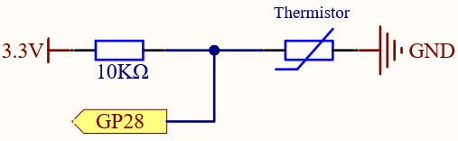
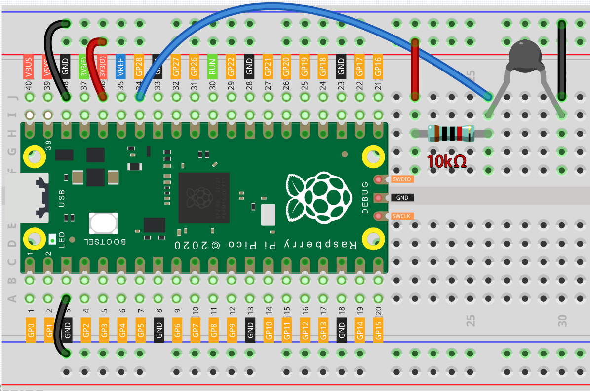

Note
Hello, welcome to the SunFounder Raspberry Pi & Arduino & ESP32 Enthusiasts Community on Facebook! Dive deeper into Raspberry Pi, Arduino, and ESP32 with fellow enthusiasts.
Why Join?
Expert Support: Solve post-sale issues and technical challenges with help from our community and team.
Learn & Share: Exchange tips and tutorials to enhance your skills.
Exclusive Previews: Get early access to new product announcements and sneak peeks.
Special Discounts: Enjoy exclusive discounts on our newest products.
Festive Promotions and Giveaways: Take part in giveaways and holiday promotions.
👉 Ready to explore and create with us? Click [here] and join today!
2.13 - Thermometer¶
A thermometer is a device that measures temperature or a temperature gradient (the degree of hotness or coldness of an object). A thermometer has two important elements: (1) a temperature sensor (e.g. the bulb of a mercury-in-glass thermometer or the pyrometric sensor in an infrared thermometer) in which some change occurs with a change in temperature; and (2) some means of converting this change into a numerical value (e.g. the visible scale that is marked on a mercury-in-glass thermometer or the digital readout on an infrared model). Thermometers are widely used in technology and industry to monitor processes, in meteorology, in medicine, and in scientific research.
A thermistor is a type of temperature sensor whose resistance is strongly dependent on temperature, and it has two types: Negative Temperature Coefficient (NTC) and Positive Temperature Coefficient (PTC), also known as NTC and PTC. The resistance of PTC thermistor increases with temperature, while the condition of NTC is opposite to the former.
In this experiment we use an NTC thermistor to make a thermometer.
Schematic

In this circuit, the 10K resistor and the thermistor are connected in series, and the current passing through them is the same. The 10K resistor acts as a protection, and the GP28 reads the value after the voltage conversion of the thermistor.
When the temperature increases, the resistance value of NTC thermistor decreases, then its voltage decreases, so the value from GP28 will decrease; If the temperature is high enough, the resistance of the thermistor will be close to 0, and the value of GP28 will be close to 0. At this time, the 10K resistor plays a protective role, so that 3.3V and GND are not connected together, resulting in a short circuit.
When the temperature drops, the value of GP28 will increase. When the temperature is low enough, the resistance of the thermistor will be infinite, and its voltage will be close to 3.3v (the 10K resistor is negligible), and the value of GP28 will be close to the maximum value of 65535.
The calculation formula is shown below.
(Vp/3.3V) x 65535 = Ap
Wiring

Note
The thermistor is black and marked 103.
The color ring of the 10K ohm resistor is red, black, black, red and brown.
Code
Note
You can open the file
2.13_thermometer.inounder the path ofeuler-kit/arduino/2.13_thermometer.Or copy this code into Arduino IDE.
Then select the Raspberry Pi Pico board and the correct port before clicking the Upload button.
After the program runs, the Serial Monitor will print out the Celsius and Fahrenheit temperatures.
How it works?
Each thermistor has a normal resistance. Here it is 10k ohm, which is measured under 25 degree Celsius.
When the temperature gets higher, the resistance of the thermistor decreases. Then the voltage data is converted to digital quantities by the A/D adapter.
The temperature in Celsius or Fahrenheit is output via programming.
long a = analogRead(analogPin);
This line is used to read the value of the thermistor.
float tempC = beta / (log((1025.0 * 10 / a - 10) / 10) + beta / 298.0) - 273.0;
float tempF = 1.8 * tempC + 32.0;
These calculations convert the thermistor values into centigrade degree and Fahrenheit degree.
Note
Here is the relation between the resistance and temperature:
RT =RN expB(1/TK – 1/TN)
RT is the resistance of the NTC thermistor when the temperature is TK.
RN is the resistance of the NTC thermistor under the rated temperature TN. Here, the numerical value of RN is 10k.
TK is a Kelvin temperature and the unit is K. Here, the numerical value of TK is 273.15 + degree Celsius.
TN is a rated Kelvin temperature; the unit is K too. Here, the numerical value of TN is 273.15+25.
And B(beta), the material constant of NTC thermistor, is also called heat sensitivity index with a numerical value 3950.
exp is the abbreviation of exponential, and the base number e is a natural number and equals 2.7 approximately.
Convert this formula TK=1/(ln(RT/RN)/B+1/TN) to get Kelvin temperature that minus 273.15 equals degree Celsius.
This relation is an empirical formula. It is accurate only when the temperature and resistance are within the effective range.
This code refers to plugging Rt into the formula TK=1/(ln(RT/RN)/B+1/TN) to get Kelvin temperature.